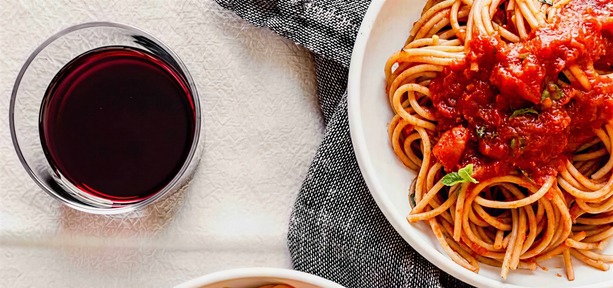
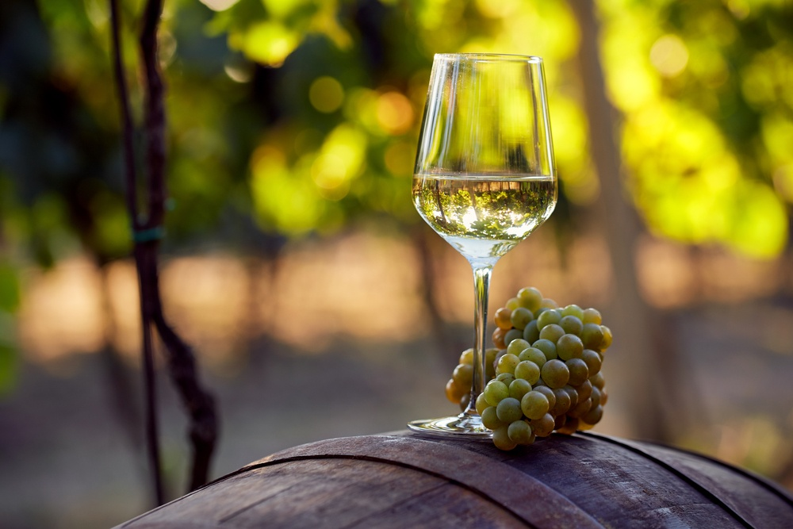
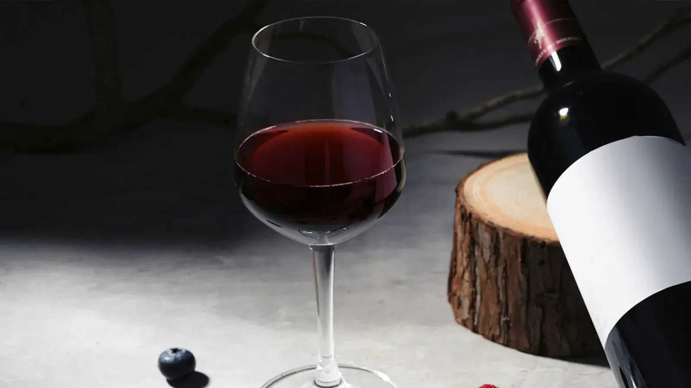
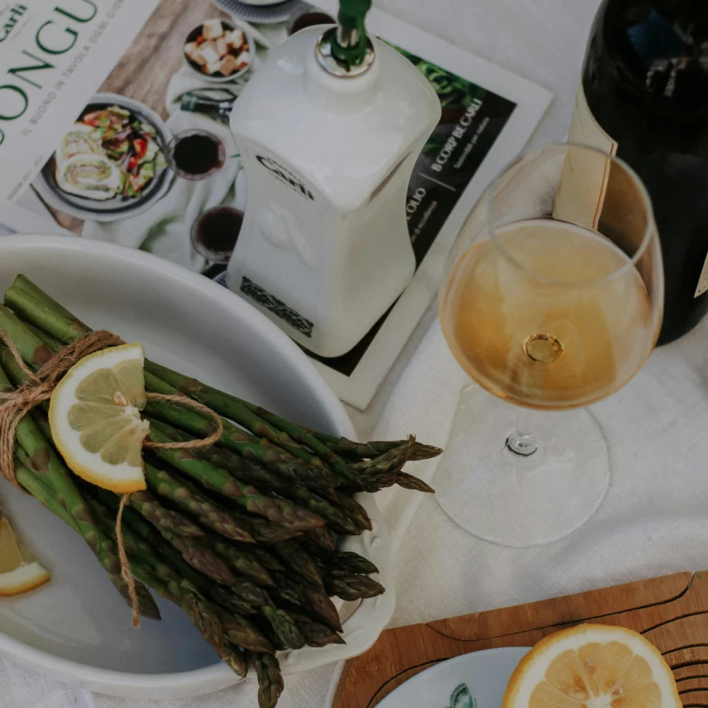

The secret to a perfect pairing is balance. A heavy meat-based Ragù requires strong tannins to cleanse the palate, while a delicate lemon-garlic pasta needs a crisp white wine that won't overwhelm.

The buttery notes of an oaked Chardonnay echo the richness of cream sauces. Soave's mineral freshness cuts through the fat. Think Alfredo or velvety Carbonara.

Robust, peppery Syrah stands up to spice and amplifies tomato depth. Primitivo — southern Italy's answer to Zinfandel — brings jammy sweetness that tames Arrabbiata heat.

The green herbaceous character mirrors fresh basil and pesto. Bright acidity complements pine nuts and Parmigiano without overpowering delicate herb notes.
Wine pairing is not just about matching flavors—it's about creating harmony. Each sip should enhance the pasta's textures and aromas, turning a simple meal into a culinary masterpiece. Remember, the best pairings are those that bring joy to your table and stories to your conversations.
The relationship between wine and pasta transcends mere accompaniment; it's a dialogue between two of Italy's greatest gifts to the world. As you explore these pairings, you'll discover how regional wines and local pasta traditions have co-evolved over centuries. Whether you're enjoying a rustic Chianti with pappardelle al cinghiale or a crisp Verdicchio with spaghetti alle vongole, each combination tells a story of place, people, and passion. Let your palate be your guide as you create your own Italian wine and pasta symphonies.